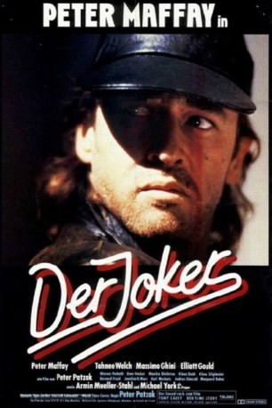

#11032 Der Joker
 
 IMDB-Wertung: 4.3 / 10
IMDB-Wertung: 4.3 / 10  Metascore: 0
Metascore: 0 
In den Hamburger Zentralen des organisierten Verbrechens häufen sich die gewaltsamen Todesfälle. Ein Spielkarten-As am jeweiligen Tatort weist auf Zusammenhang und denselben Täter. Kommissar Jan Bogdan nimmt den Kampf auf. Auch als Krüppel nach einer Explosion bleibt er im Rollstuhl dem Killer auf der Spur. Sein Revanchespiel in den Grauzonen der Alster-Illegalität ermöglicht einen zeitlich begrenzten Waffenstillstand, bis auch Bogdan selbst erschossen wird.
Jahr: 1987
Dauer: 97 Minuten
FSK: 16
Land: West-Deutschland Studio: TivoliTonspuren:
Untertitel:
Auflösung: 1080p (1792x1080) Größe: 6707 MB
Genre: Thriller, Drama, Krimi
Regisseur: Peter Patzak
Drehbuch: Jonathan Carroll, Mortimer Ellis, Peter Patzak
Soundtrack: Tony Carey, Carl Carlton, Frank Diez, Peter Maffay
Darsteller:
- Tahnee Welch als Daniela Santini
- Massimo Ghini als Toni Blach
 Elliott Gould als Serge Gart
Elliott Gould als Serge Gart Marquard Bohm als Pfeffer
Marquard Bohm als Pfeffer- Werner Pochath als Resch
 Armin Mueller-Stahl als Axel Baumgartner
Armin Mueller-Stahl als Axel Baumgartner Michael York als Dr. Proper
Michael York als Dr. Proper- Otto Retzer als Chauffeur (uncredited)
- Peter Maffay als Jan Bogdan
- Bernard Freyd als Mario Santini
- Karl Merkatz als Josef Blach
- Elke Krings als Theresa Blach
- Joachim Dietmar Mues als Salz
- András Gönczöl als Koura
- Monica Bleibtreu als Cilly
- Uwe Hacker als Riese
- Klaus Bueb als Paul
- Klaus Stiglmeier als 1. Zuhälter
- Dietmar Mössmer als 2. Zuhälter
- Peter Patzak als Mann an der Theke (uncredited)
Datei: X:\1987\Joker, Der (1987, FSK16, 1792x1080).mkv seit 22.04.2019
Festplatte: HD 1987-1991
 Es gibt insgesamt 50 Filme in der Gruppe '1987'
Es gibt insgesamt 50 Filme in der Gruppe '1987'